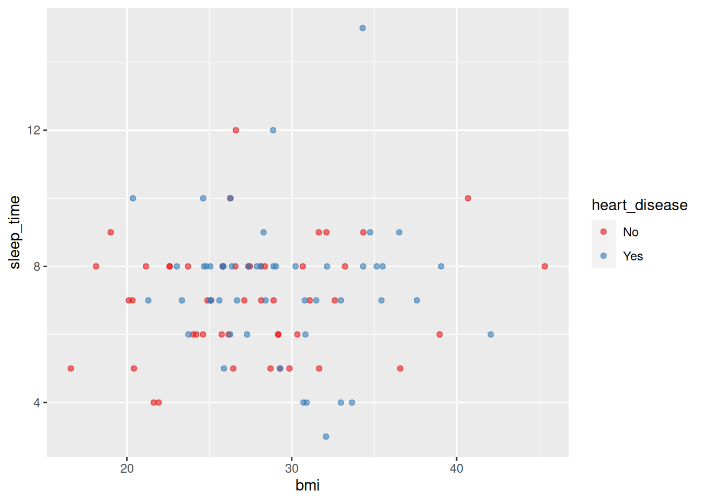

9 Trends
We will keep using the heart disease dataset (see ?sec-import_local). However, we will consider a small subset of these data in order to lower computing resources.
Code
df <- df |> group_by(heart_disease) |> slice_head(n = 50)Code
df = df.groupby("heart_disease").head(50)9.1 Scatter Plots
9.1.1 A simple scatter plot
library(ggplot2)
df |>
ggplot(aes(bmi, sleep_time)) +
geom_point()import matplotlib.pyplot as plt
import seaborn as sns
import seaborn.objects as so
sns.set_theme()
(
so.Plot(df, "bmi", "sleep_time")
.add(so.Scatter())
.show()
)9.1.2 Color by variable
df |>
ggplot(aes(bmi, sleep_time, color = heart_disease)) +
geom_point(alpha = 0.6) +
scale_color_brewer(palette = "Set1")
(
so.Plot(df, "bmi", "sleep_time", color="heart_disease")
.add(so.Scatter(alpha=0.6))
.scale(color="Set1")
.show()
)or also:
sns.relplot(
x="bmi", y="sleep_time", hue="heart_disease",
alpha=0.6,
palette="Set1",
data=df
);
plt.show()9.2 Line Plots
df |>
ggplot(aes(bmi, sleep_time, color = heart_disease, linetype = smoking)) +
geom_line(alpha = 0.6) +
scale_color_viridis_d(option = "plasma")sns.lineplot(
x="bmi", y="sleep_time", hue="heart_disease", style="smoking",
alpha=0.6,
palette="plasma",
data=df
)9.3 Combine different layers
df |>
ggplot(aes(bmi, sleep_time, color = heart_disease)) +
geom_line(aes(linetype = smoking), alpha = 0.6) +
geom_point(aes(shape = smoking), alpha = 0.6) +
scale_color_viridis_d(option = "plasma")sns.relplot(
x="bmi", y="sleep_time", hue="heart_disease", style="smoking",
kind="line", markers=True, alpha=0.6,
palette="plasma",
data=df
);
plt.show()